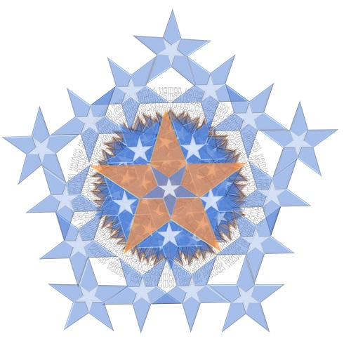

"Нагваль" не приходит к чувствующим существам для весенней прогулки к Орлу за какими-то там "магическими плюшками", он всегда приходит и уходит также, как приходит Дух — внезапно, с целью образовать прерывание в непрерывной устоявшейся и удобной своим молчаливым одобрением со стороны окружающих человека "безупречных воинов", но таком привычном и понятным, вплоть до будоражащего воображение "завесы неведомого", повседневном образе самого себя и мира. Такое прерывание, которое воин не сможет игнорировать, об этом говорят все "Абстрактные Ядра" у Кастанеды. И будет вынужден отправиться в Путь вместе с Ним, как один человек с одним сердцем, понимая и желая, или не понимая и не желая этого.
Нагваль — это буревестник, опасный сумасшедший, которому нет дела до устоявшихся в умах "правильных, авторитетных товарищей" образов того, что истинно, годно и нужно, ему есть дело только до того, что он сам, Милостью Творца, Свят Благословен Он, знает, что есть правда и Истина, не потому, что она "существует или не существует", а просто потому, что он создан Орлом, чтобы раскрыть и распространить ее себе подобным, как это описано в Правиле, и занимается этим независимо от чьего бы то ни было, включая его собственное в первую очередь, очень важного и ценного, как водится, "особого мнения" по этому поводу, как и "по поводу" формы и характера распространяемой им информации и образа действия, как его воспринимают окружающие, с которыми он таким образом соединяется, потому что до этого всего нет дела Тому, Кто дает им этот Дар стремиться "принять" и "передать дальше", как один человек с одним сердцем, и он знает, без слов или мыслей об этом, что Воля Дающего будет реализована так, как Ему и человеку требуется, независимо от того, насколько это кажется "вероятным" или "невероятным" человеку этого мира, насколько успешно или неуспешно, как ему кажется, "нагваль" действует, передавая Ее, правильно ли он понимает то, что делает, и так далее, и тому подобное.
"Вафелька" с форума ушел, не потому, что его "забанили" или "изгнали" "нехорошие админы и модераторы", а потому, что в этом, на данный момент, заключается Воля Творца, Свят Благословен Он, Которую они выполняют безупречно и трепетно, как и все Его создания, "свободный осознанный выбор" которых заключается только в том, чтобы стремиться при этом сохранить осознание и помнить себя, или не стремиться, стремясь понимать и контролировать своим собственным умом то, что в их жизни и в окружающем их мире происходит, давая этому имена и названия в соответствии с собственным желанием или нежеланием принимать объективную реальность Дара Орла и его получения человеком и другим человеком вместе, "как один человек с одним сердцем", Мужчиной и Женщиной Он создал их. Приложив максимальные усилия, и выполнив задачу Бенефактора в своей "последней битве на этой Земле", воин спокойно, с чувством удовлетворения и выполненного долга, отступает "за сцену", позволяя действовать Духу, который завершит "раскрытие" Своей Воли и Своего Дара "творениям" явно и во всем требуемом совершенстве Сам, лично, без посредников и надоедливых "санитаров и санитарчиков Духа".
Сделаем и услышим!
См. также: Буревестник, М. Горький.
culture.ru — Песня о Буревестнике
Зеркало на сайте Будущий Мир
bneiadam.com/forum/53-272-1